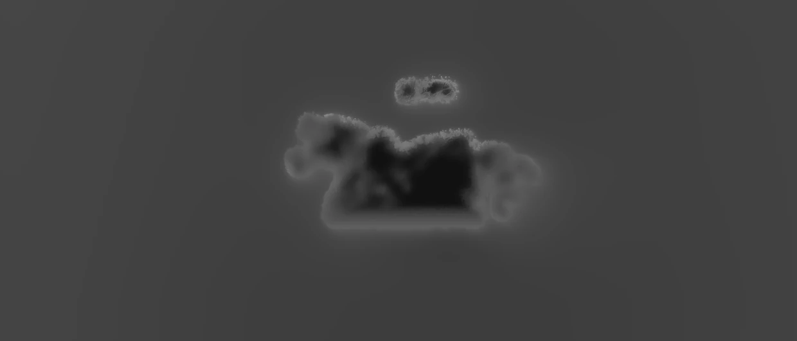
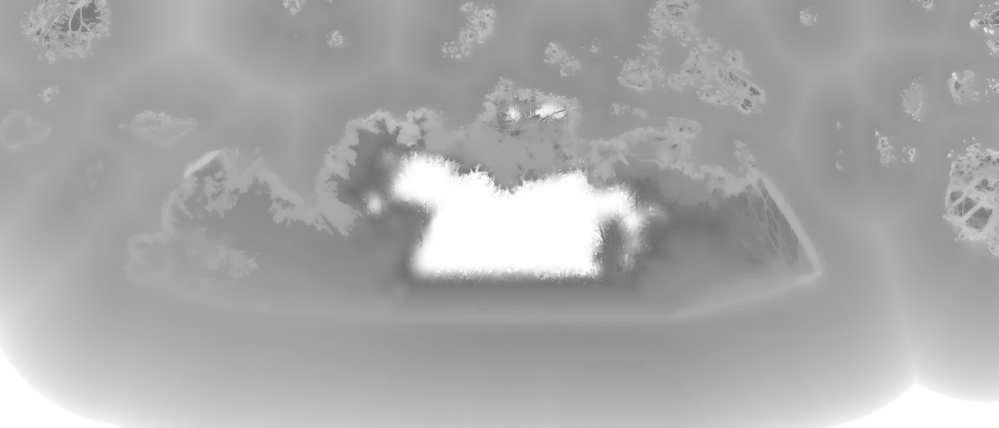
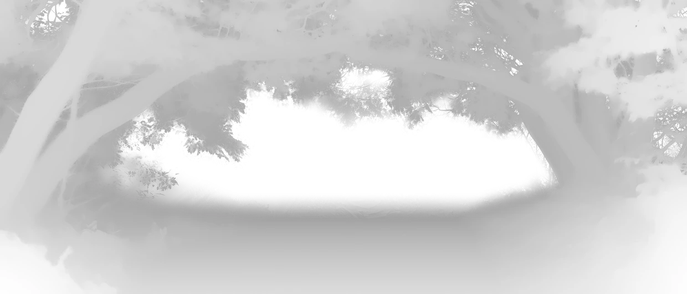
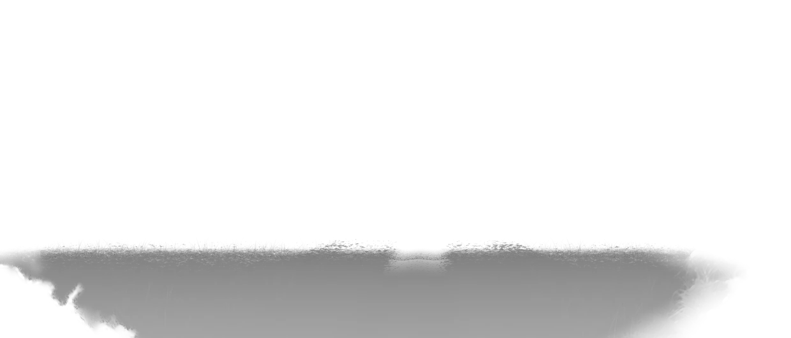

Constraint
Photoreal light must run on hardware that cannot path-trace a frame in the browser.
CASE / Rendering / ambient
Ambient app. Japanese for a sunny spot, the pool of light you stand in.

HOW IT HOLDS UP
The offline bake, runtime reprojection and PWA delivery.
Photoreal light must run on hardware that cannot path-trace a frame in the browser.
Bake lighting in Blender Cycles and reproject depth against pre-lit plates; reserve the runtime for compositing and parallax.
Playable prototype reaches 116fps; audio is still being tuned before public release.
SELECTED PROOF
RECORDED STATES




KEEP READING